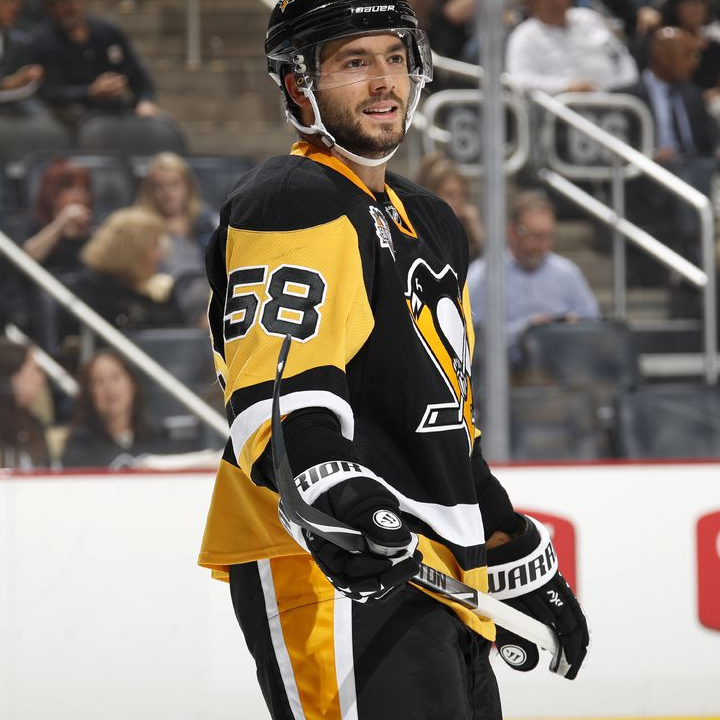
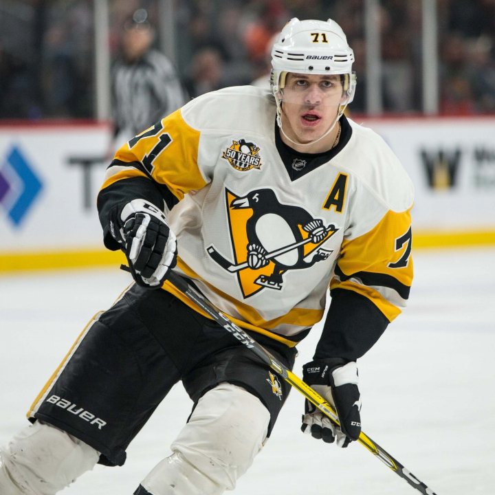
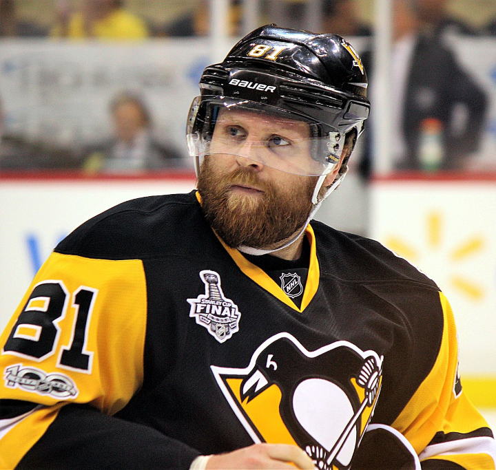

After 16 years of school/university I got bored and decided to become a Web Developer.
My mission is to reach PRO level.
|  |
Kris LetangPosition: Defenseman Number: 58 Kristopher Allen Letang (born April 24, 1987) is a French-Canadian professional ice hockey defenceman and alternate captain for the Pittsburgh Penguins of the National Hockey League (NHL). |
|  |
Evgeni MalkinPosition: Centerman Number: 71 Yevgeni Vladimirovich Malkin (born 31 July 1986) is a Russian professional ice hockey centre and alternate captain for the Pittsburgh Penguins of the NHL. |
|  |
Phil KesselPosition: Right wing Number: 81 Philip Joseph Kessel Jr. (born October 2, 1987) is an American professional ice hockey right winger currently playing for the Pittsburgh Penguins of the NHL. |